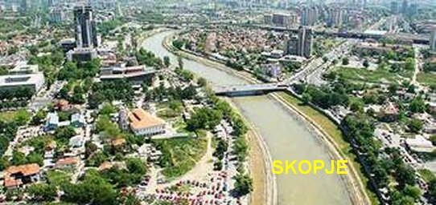
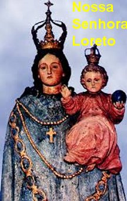
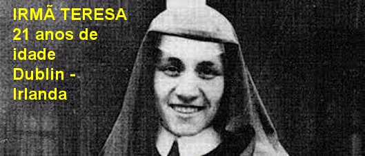
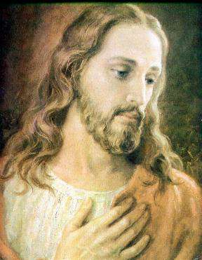
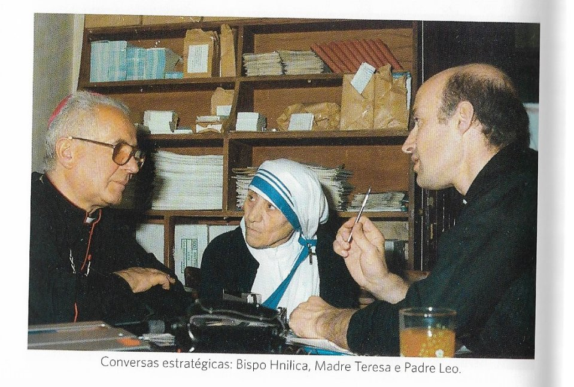

“QUERIA SER
MISSIONÁRIA”
SEUS PAIS E A FAMÍLIA
Madre Teresa cujo nome civil era
Agnes Gonxha Bojaxhiu, nasceu de uma família católica albanesa. O seu pai,
senhor Nikola Bojaxhiu (carinhosamente
chamado de Kole), era da cidade de
Prizren e, a partir de 1900, passou a viver em Skopje (antiga cidade Üsküp), e
atual capital da Macedônia. Ele trabalhou como farmacêutico e depois como
arquiteto. Nessa última profissão entrou no negócio de construções em companhia
de um amigo. A mãe chamava-se senhora Drana e eles se casaram no civil, tendo
ela 16 anos de idade, sendo 18 anos mais nova que o seu marido. Em 1905 nasceu à
primeira filha, a menina Aga; três anos depois, em 26 de Agosto de 1910, nasceu
à filha Agnes (que se tornou Madre Teresa). A família ainda tinha um filho
homem, com o nome de Lazar, nascido em Skopje provavelmente em 1912 ou 1913.
Sua mãe Drana, mulher muito
religiosa, sempre levava as filhas à Missa pela manhã e, à noite, rezava o Rosário
com elas. Foi também na sua família que a pequena Agnes conheceu a dimensão
social da fé, pois muitas vezes acompanhou a sua mãe, que sempre visitava os enfermos
e pobres, e procurava ajudá-los de alguma forma.
A família viveu com certa
comodidade orçamentária até a morte do pai que ocorreu quando ele estava com 46
anos de idade. O senhor Kole Bojaxhiu era membro do Conselho Municipal da
Cidade, e se interessava pelas questões de direitos dos albaneses. Os
adversários sempre existiam e eram violentos. No ano de 1919 ao voltar de uma
reunião na cidade de Belgrado, capital da Servia, sentiu terríveis dores na
parte frontal do corpo, abrangendo a área do peito ao estomago. Eram dores tão
intensas que foi hospitalizado em Skopje, e faleceu poucas horas depois. Seu
filho Lazar, sempre acreditou que o seu pai foi envenenado por razões políticas.
Agnes estudou numa escola pública
da atual Croácia, e depois da morte do pai, a família entrou num período muito difícil.
Em 1922, aos 12 anos de idade, teve a oportunidade de ouvir pela primeira vez, as
homilias de Padres jesuítas croatas que atuavam na Índia. Desde então, cresceu na
jovem o desejo de ir para a Índia como missionária. Nesta época, Agnes e sua irmã
Aga pertenciam à Congregação Mariana da Paróquia do CORAÇÃO DE JESUS, dirigida por
jesuítas, em Skopje. Com certeza esse fato marcou profundamente a sua vida, enraizando
uma espiritualidade Mariana, jesuíta e totalmente concentrada no CORAÇÃO DE JESUS.
Mais tarde, no dia 29 de Setembro
de 1928 tendo Agnes 18 anos de idade, e com o consentimento da mãe ingressou na
Congregação Religiosa das Irmãs de Loreto, em Dublin na Irlanda. Nunca mais voltou
a ver a mãe e os irmãos, que em 1934 se mudaram de Skopje para a capital Albanesa,
Tirana. A Albânia comunista nunca autorizou a entrada de Madre Teresa, não
obstante as diversas intervenções feitas por parte de altos políticos.

CONGREGAÇÃO DE NOSSA SENHORA DE
LORETO
A Congregação das Irmãs de NOSSA
SENHORA DE LORETO em Dublin, na Irlanda, tinha uma forte influência jesuíta, e
Agnes sempre
revelou o objetivo definido de no futuro
ir para a Índia como Missionária.
Da Irlanda, em fins de 1928, Agnes
foi enviada para a Índia, para a cidade de Darjeeling, no Norte da Índia, onde a
Congregação das Irmãs de Loreto possuíam uma Casa da Congregação, na base do
Monte Himalaia. Ela iniciou o Noviciado em 1929 e teve a oportunidade de
aprender o idioma bengali e o hindu. Em 24 de Maio de 1931, terminou o Noviciado
com 21 anos de idade e professou os Votos Provisórios de pobreza, castidade e obediência,
recebendo o nome de “Teresa”,
em homenagem a Santa Teresinha do Menino Jesus. De Darjeeling,
um ano depois, Irmã Teresa foi enviada para Calcutá, onde a Congregação de NOSSA SENHORA
DE LORETO possuía um Colégio, o COLÉGIO DE SANTA MARIA, oportunidade em que lecionou
Geografia e História, e mais tarde, por seus conhecimentos e ampla visão administrativa,
foi nomeada Diretora do Colégio. Também em 1938, com 28 anos de idade, professou os
Votos Perpétuos.
IRMàTERESA A FREIRA
Em 1946 Irmã Teresa já era
Freira há 15 anos, e sempre aspirava um objetivo maior, de viver em plena e
total santidade. Em 10 de Setembro, numa viagem de trem de Calcutá
para Darjeeling, no sentido de participar de um Retiro Espiritual da Congregação,
teve uma experiência definitiva: “Antes da viagem, a caminho da estação ferroviária, viu inúmeros pobres,
pois desde a recente insurreição indiana na qual ocorreu muita morte, uma grande
parte da população ficou totalmente na miséria. Na estação, onde o trem superlotado
parou, eram visíveis as consequências daqueles tumultos, com multidões em completa
miséria. Durante a longa viagem, ela ouvia claramente as palavras de JESUS no
coração": “Tenho sede”,“Tenho
sede”. Com profundidade
comovente, Madre Teresa compreendeu que verdadeiramente DEUS não só nos ama, como
também as palavras de JESUS “Tenho
sede”, expressa o imenso
anseio do SENHOR pelo amor das suas criaturas e pela salvação das suas almas.
Pensando nesta realidade, reconheceu o verdadeiro cerne da sua vocação”.
Nos 10 dias de Retiro Espiritual
em Darjeeling ela teve a oportunidade de refletir sobre o acolhimento da
mensagem de JESUS. Ao voltar para Calcutá tinha a certeza de que sua vida iria
mudar. Pois decidiu servir JESUS no “mais pobre dos pobres”.“Levar uma vida de pobreza entre os pobres, não possuir nada e confiar
sempre e plenamente na Providência e na orientação de DEUS”.
No dia 2 de Abril de 1948, o
Papa Pio XII, em resposta a uma consulta do Arcebispo de Calcutá, Ferdinand
Périer, autorizou Madre Teresa a viver como Freira fora do Convento. Ficava,
contudo, obrigada tanto a obedecer ao Arcebispo como a respeitar as regras da
sua Congregação. Em 16 de Agosto de 1948, despiu o hábito das Irmãs de Loreto e
deixou o Convento. Depois de 18 anos de convivência, com dificuldade se despediu
das Irmãs da CONGREGAÇÃO DE NOSSA SENHORA DE LORETO. Foi uma despedida com
muitas lágrimas, repleta de emoção.
NOVO CAMINHO DE SANTIDADE

Para começar o novo caminho
que decidiu trilhar, ela como eminente pedagoga encontrou as luzes que iluminava a
sua vereda exatamente através das crianças. Madre Teresa conversando e agradando
as crianças, encontrou nas ruas de Calcutá os sem teto, os doentes, os
desvalidos, os aleijados, os desfigurados, enfim, o caminho certo até os
miseráveis. E em seguida, rezava e ajudava, colocando todas as suas iniciativas,
de corpo e alma, a serviço da Divina Providência, deixando tudo nas MÃOS DE
DEUS... Por que não tendo nada, todas as necessidades só deveriam e poderiam ser
supridas por OBRA DIVINA. E o SENHOR maravilhosamente recompensou a sua fé
verdadeira.
Para auxiliar o seu trabalho com
os “pobres dos pobres”
, Madre Teresa dirigiu-se à Patna, e fez um breve
e instrutivo curso de enfermagem. No dia 21 de Dezembro, em reconhecimento ao seu
trabalho na Índia, obteve a nacionalidade indiana. Nesta mesma época Madre Teresa
reuniu um grupo de cinco crianças, num bairro pobre e começou a dar aulas. A noticia
se espalhou e as famílias agradeceram; cerca de dez dias depois eram cinquenta crianças
que se apresentavam para aqueles belos e eficientes ensinamentos. Como ela havia
abandonado o hábito da Congregação de Loreto, usava um sári branco, debruado de
azul e no qual havia no ombro uma pequena cruz.
CONGREGAÇÃO DAS MISSIONÁRIAS DA
CARIDADE
Em 19 de
março de 1949, as vocações começaram a surgir entre as suas antigas alunas do
Colégio em Calcutá. A primeira delas foi Shubashini, uma jovem simpática, filha
de uma rica família que estava muito disposta a seguir a Irmã Teresa, colocando
sua vida a serviço dos pobres. E na sequência dos dias, outras voluntárias
surgiram e foram se agregando ao trabalho missionário. E por isso mesmo, Irmã
Teresa definiu a profissão de todas elas como “Missionárias da Caridade”. E assim, em 1949 a Constituição da Irmandade começou a ser redigida.
A nova “Congregação Missionária”
foi aprovada pela Santa Sé, com a bênção do
Papa Pio XII, no dia 07 de Outubro de 1950. A partir desta época, a Irmã Teresa
passou a ser chamada de “Madre
Teresa”, a “Superiora”
da sua Congregação.
Em Agosto de 1952 agilizou dois
empreendimentos importantes: abrindo o Lar Infantil “Sishi Bavan”
(Casa da Esperança) e inaugurando o
“Lar para Moribundos” em Kalighat, para receber
e auxiliar os pobres doentes e famintos. A partir do final de 1952, o número de
vocações das Missionárias da Caridade cresceu de modo admirável, fazendo com que
a Congregação Missionária se tornasse conhecida pelo seu atencioso trabalho,
ensejando a possibilidade concreta de Madre Teresa se expandir na Índia
e em diversos outros países.
A MISSÃO PELO MUNDO
A partir de 1953 abriu diversas
“Casas Missionárias”
na Índia, nas Ilhas Philipinas, nos Estados Unidos, e em
diversos países da Europa. Com admirável empenho em favor dos pobres mais pobres,
externava fervorosamente o seu desejo de consolar e aliviar as dores e desapontamentos
de JESUS manifestado nas SUAS Divinas Palavras “Tenho Sede”, pronunciadas em SEUS últimos
momentos de VIDA na CRUZ. Madre Teresa, por sua coragem e incansável ação, recebeu uma
quantidade incontável de “Prêmios”,
“Condecorações”, “Medalhas Comemorativas” em muitos
países. O mundo verdadeiramente reconheceu o seu valor espiritual incontestável, demonstrado
na pregação da “Paz”
, e sempre buscando minorar os sofrimentos
dos mais pobres.
As pessoas e aos repórteres que
buscavam informações, ela respondia:“Sou albanesa de nascimento, e hoje sou cidadã indiana. Sou também uma Freira
Católica. No que diz respeito ao meu trabalho, pertenço a todo o mundo, mas, no fundo
do coração, só a CRISTO pertenço”.
Um grupo de jornalista entrevistava
a Madre, e um deles falou:
“Madre Teresa, aquilo que a senhora faz é admirável!” Ela respondeu: “Sabe!
Eu sou apenas um “pequeno lápis na Mão de DEUS”, um DEUS maravilhoso, sempre disposto
a escrever uma carta de amor ao mundo”. Nestas
poucas palavras ela revela a humildade e a grandeza Divina: que NOSSO SENHOR se serve
de nós, seres imperfeitos, para mostrar a SUA grandeza.
O QUOTIDIANO DAS MISSIONÁRIAS
 Na convivência e na labuta
em companhia das Irmãs, ela sempre gostava de repetir e colocar em evidência as
palavras de JESUS, registradas nos Evangelhos, como parte de instrução e
ensinamento: “Por isso,
não andeis preocupados dizendo: Que iremos comer? Ou, que iremos beber? Ou, que
iremos vestir? Busquem, em primeiro lugar, o Reino de DEUS e a sua Justiça, e
todas estas coisas vos serão dadas por acréscimo.” (Mt 6,31-33)
Na convivência e na labuta
em companhia das Irmãs, ela sempre gostava de repetir e colocar em evidência as
palavras de JESUS, registradas nos Evangelhos, como parte de instrução e
ensinamento: “Por isso,
não andeis preocupados dizendo: Que iremos comer? Ou, que iremos beber? Ou, que
iremos vestir? Busquem, em primeiro lugar, o Reino de DEUS e a sua Justiça, e
todas estas coisas vos serão dadas por acréscimo.” (Mt 6,31-33)
E assim, verdadeiramente, de
maneira bela e impressionante, as coisas visivelmente aconteciam. Certa vez,
Madre Teresa deu a um Padre seu único dinheirinho, sem saber do que iria viver
no dia seguinte. À noite, um desconhecido chegou a sua modesta casa e lhe
entregou um envelope com o equivalente a quinhentos reais
“para a sua obra”.
No inicio, Madre Teresa conseguiu que
um Sacerdote fosse celebrar uma Santa Missa comemorativa numa das Casas em Calcutá
na Índia. Como não havia um auxiliar preparado a fim de ajudar o Padre, ela foi
pessoalmente e se apresentou. Mais tarde, estando em outra Casa Missionária, ela
disse:“Hoje ajudei a repartir
o CORPO DE CRISTO" (distribuir a SAGRADA
EUCARISTIA durante a Santa Missa, como fazem os Ministros Extraordinários da
Eucaristia e os Diáconos).
Segurei a SANTA HÓSTIA com dois dedos e pensei: como JESUS se fez pequenino para
nos mostrar que não espera grandes coisas de nós, mas pequenas coisas com grande
amor”.
A constante atenção de Madre
Teresa por seus semelhantes era consequência do seu lema:
“Deixe que o seu amor se transforme
em ação”.
E gostava de acrescentar:
“O presente é importante e auxilia no
cultivo de uma amizade, ou numa manifestação de simpatia. Mas não se trata de quanto
damos, ou seja, do valor do presente. Mas, primordialmente, deve tratar-se de quanto
amor colocamos na doação”.

FUNDADOR E AMPARO DA CONGREGAÇÃO
MISSIONÁRIA
Padre Leo Maasburg escreveu:
Tive a oportunidade de conhecer Madre Teresa quando ainda eu era
estudante-seminarista. Na época eu colaborava com o Senhor Bispo Pavol Hnilica,
eslovaco exilado em Roma. Ele havia conhecido Madre Teresa num Congresso
Eucarístico em Bombaim (hoje Mumbai) na Índia, e de imediato, reconheceu a
personalidade que tinha diante de si. O Bispo contou sua experiência ao Papa
Paulo VI, que tempos depois decidiu convidar Madre Teresa para ir a Roma. Ela
foi, e o Bispo Hnilica ajudou também a instalar a Primeira Comunidade das
Missionárias da Caridade, no Bairro Tor Fiscale, nos arredores de Roma.
O Bispo Hnilica não falava inglês, conversava em eslovaco. Madre Teresa
conhecia e falava inglês e também o idioma sérvio. Então eles se entendiam de
modo bem rudimentar. Por isso, quando se tratava de assunto mais complicado
eles precisavam de um interprete. Nesta época eu já era Sacerdote e fui convocado
a entrar em cena, traduzindo a conversa para os dois. Na continuidade, Madre
Teresa me explicou que necessitava de um Sacerdote para a celebração diária da
Santa Missa, para ouvir Confissões das Missionárias e ajudá-la no Serviço Social
e Ministerial com os pobres mais pobres. Abracei a missão com prazer.
Nos primeiros anos de existência,
das Missionárias da Caridade em Viena, na Áustria, elas pagavam um aluguel
pesado pelas instalações que utilizavam para  abrigar os
pobres. Quando a Irmã Encarregada expôs o fato a Madre Teresa, ela se limitou a
dizer:
“DEUS há de tratar disso!”
Depois da conversa com a Irmã, Madre Teresa saindo em
companhia do Padre Leo, duas senhoras de idade vieram ao encontro dela, e muito
felizes conversaram animadamente. Na despedida deixaram com a Madre Teresa um
envelope com cerca de trezentos mil Xelins (antiga moeda austríaca antes do Euro),
que dava para pagar seis meses de aluguel do imóvel utilizado para os pobres.
abrigar os
pobres. Quando a Irmã Encarregada expôs o fato a Madre Teresa, ela se limitou a
dizer:
“DEUS há de tratar disso!”
Depois da conversa com a Irmã, Madre Teresa saindo em
companhia do Padre Leo, duas senhoras de idade vieram ao encontro dela, e muito
felizes conversaram animadamente. Na despedida deixaram com a Madre Teresa um
envelope com cerca de trezentos mil Xelins (antiga moeda austríaca antes do Euro),
que dava para pagar seis meses de aluguel do imóvel utilizado para os pobres.
Madre Teresa e as Irmãs tinham
muitas dessas histórias para contar, que aconteciam não só na Índia, mas em
quase todas as Comunidades da Congregação espalhadas em todo o mundo. Elas
sabiam que os milagres aconteciam todos os dias, testemunhando que JESUS não
abandona a SUA Obra. Madre Teresa via no pobre, no sofredor, o verdadeiro CORPO
DE CRISTO, a QUEM ela servia com dedicação em todas as oportunidades. Em momento
algum ela permitiu considerações de que as Missionárias da Caridade fossem obra
sua. Sempre e com toda sinceridade afirmava: “Não, a Congregação das Missionárias da Caridade, é OBRA DE CRISTO. ELE é QUEM
sempre providencia os recursos necessários e que nos orienta, inspirando as decisões
corretas para instalação de Novos Tabernáculos e dirigi-los, com sabedoria e santidade.
ELE é o Fundador e o Amparo Permanente da Congregação Missionária".
Quando a Madre falava das
“Suas Casas”,(as Instalações da Congregação Missionária em qualquer país, como se fossem
filiais) ela dizia apenas: “Demos
a JESUS um Novo Tabernáculo”. Pois na verdade,
ela rezava muito para escolher os locais, e construía as Casas de modo tão pragmático,
tão consciente das divisões e colocações, que lhe seria impensável a Fundação de
qualquer Casa sem um “Sacrário”.
Por essa razão ela sempre
evidenciava que não era "Outra Casa", mas outro "Tabernáculo",
porque lá JESUS permaneceria presente.

 PRÓXIMA PÁGINA
PRÓXIMA PÁGINA
RETORNA AO ÍNDICE